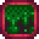
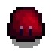
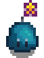
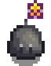

Slimes
| Slimes | |
 | |
| Information | |
| Spawns In: | The Mines, Skull Cavern, Quarry Mine, Secret Woods, Tiger Slime Grove, and Volcano Dungeon |
| Floors: | All |
| Killable: | Yes |
| Base HP: | Varies |
| Base Damage: | Varies |
| Base Def: | Varies |
| Speed: | Varies |
| XP: | Varies |
| Variations: | Several |
| Drops: | If reached bottom of Mines: |
- This article is about the monster. For the drop, see Slime.
Slimes are enemies that can be found in various locations, including The Mines and the Secret Woods. They come in five different variations, all based on the same sprite and code (a color hue is added to the grey sprite found in data files). You need to kill 1000 Slimes of any color for Monster Eradication Goals. All Slimes in the game count towards this goal (e.g., in the Secret Woods) except for Big Slimes and Slimes raised in a Slime Hutch (by means of a Slime Incubator or Mating). Slimes spawned by killing a Big Slime do count towards the goal.
Each color of slime has a unique stat set.
Depending on the player's Combat Level, certain Slimes can spawn on the Wilderness farm by default. This is true for any farm type, if the player has activated the Dark Shrine of Night Terrors or enabled monsters in advanced options when starting a new game. Slimes slain on the Farm will only yield 1/3 of their normal experience points.[1]
Attacks

All colors of slimes, both male and female, have an attack zone of 4 tiles in all directions. If the player enters this zone, the slime will attack.
Slimes attack in two ways. Either they bounce slowly at the player, or they "charge" to jump at the player from a distance. The charging animation resembles the slime becoming almost flat to the ground. If there is an obstacle in the way, the charge jump will cause them to bounce off the object (sometimes multiple times if they're in a tight spot). Occasionally slimes will enter a state of rage after being attacked, causing them to move significantly faster and have red eyes.
Being hit by a slime reduces health and may cause the Slimed debuff. These effects can be prevented by equipping a Slime Charmer Ring.
| Image | Name | Effect | Cause | Duration |
|---|---|---|---|---|
|  | Slimed | Being hit by a Slime. |
Strategy
When a slime is hit, it will be knocked back a short distance, out of range of melee weapons. The best strategy to kill slimes is to quickly move into striking distance to prevent their charge attack and corner them upwards or sideways against a wall or, ideally, in a corner (of walls, rocks, or both). Both the charged and regular attacks may be avoided by using a defensive move (such as the block of the regular sword). Timing a block with a sword well can allow the player to get a decent amount of damage. Otherwise, offense is the best defense.
The Slime Charmer Ring prevents all damage from Slimes. This ring is obtained as a reward for killing 1000 slimes for the Adventurer's Guild.
Male Slimes
Any slimes have a 49% chance to be male and will retain its original properties such as being special. Male slimes have a pom-pom like antenna dangling above their "heads", 25% more health over the base HP, and 1 more damage. When it is passive and is attacked, male slimes have a 2.5% chance to increase its damage by 50% and do a shaking animation.


Mating
In a Slime Hutch or (less commonly) The Mines, Secret Woods, Skull Cavern, Tiger Slime Grove, or Quarry Mine, male and female slimes may mate to produce a small slime that will grow into either a male or female adult slime. This can also occur on the farm if monster spawns are enabled at the Dark Shrine of Night Terrors or the Wilderness farm. If so, the resulting child slimes will not despawn overnight, theoretically enabling slime farming without a Slime Incubator.
Mating Color Results
The game randomly picks a method from the following table to determine how the color will be calculated. Using this chosen method each of the red, green, and blue color components of the slime is then calculated independently using the values from the parent Slimes. The most likely method has a separate roll for each color component to determine whether the maximum or the average of the parents' components will be used. [2]
| Chance | Each Color Component (Red, Green, or Blue) |
|---|---|
| 25% | Male Parent Component +/- random 25% |
| 25% | Female Parent Component +/- random 25% |
| 50% | 50%: Maximum of (Male Parent Component or Female Parent Component) 50%: Average of (Male Parent Component and Female Parent Component) |
Variations
Color
Note: Once a Slime Hutch has been built on The Farm, any Green, Blue, Red, Purple, or Tiger slimes encountered anywhere may drop a Slime Egg. [3]
| Green Slime | |||||||
|---|---|---|---|---|---|---|---|

| |||||||
| HP | Damage | Defense | Speed | XP | Location | Drops [4] | |
| 24 | 5 | 1 | 2 | 3 | The Mines (Floors 1-29), Secret Woods, The Farm (Combat Level 0-3) |
||
| Blue Slime (Frost Jelly) | |||||||

| |||||||
| HP | Damage | Defense | Speed | XP | Location | Drops [4] | |
| 106 | 7 | 0 | 2 | 6 | The Mines (Floors 41-79, but can sometimes be found on other Floors), Secret Woods, The Farm (Combat Level 4-7) |
||
| Notes: | Each attack slightly increases the chance to start glowing and increase its speed by 2 | ||||||
| Red Slime (Sludge) | |||||||
|  | |||||||
| HP | Damage | Defense | Speed | XP | Location | Drops [4] | |
| 205 | 16 | 0 | 2 | 10 | The Mines (Floors 81-119), The Farm (Combat Level 8-9) |
||
| Purple Slime (Sludge) | |||||||

| |||||||
| HP | Damage | Defense | Speed | XP | Location | Drops [4] | |
| 410 | 16 | 0 | 2 | 10 | Skull Cavern (1%), The Farm (Combat Level 10) |
||
| Yellow Slime | |||||||

| |||||||
| HP | Damage | Defense | Speed | XP | Location | Drops [4] | |
| 3 original slime | 2 original slime | Varies | 2 | Varies | The Mines, Skull Cavern |
Original slime's drops Color based drops (see table below) | |
| Notes: | 0.1% chance to recolor any slime (including special and male), will keep all the original slime's properties other than HP and Damage. | ||||||
| Black Slime | |||||||

| |||||||
| HP | Damage | Defense | Speed | XP | Location | Drops [4] | |
| Varies | Varies | Varies | 2 | Varies | Slime Hutch | Original slime's drops Color based drops (see table below) | |
| Notes: | In a Random Event after you sleep, the Witch will fly over your Slime Hutch, she will turn Slimes inside into Black Slimes. They keep the original slime's special properties and stats. | ||||||
| Copper Slime | |||||||

| |||||||
| HP | Damage | Defense | Speed | XP | Location | Drops [4] | |
| 102 | 16 | 0 | 4 | 10 | Quarry Mine, Random dungeon Floors in The Mines |
||
| Iron Slime | |||||||

| |||||||
| HP | Damage | Defense | Speed | XP | Location | Drops [4] | |
| 205 | 16 | 0 | 1 | 10 | Quarry Mine, Random dungeon Floors in The Mines |
||
| Tiger Slime | |||||||

| |||||||
| HP | Damage | Defense | Speed | XP | Location | Drops [4] | |
| 415 | 23 | 0 | 2 | 20 | Tiger Slime Grove Volcano Dungeon |
||
Special Slimes
Special Slimes have a very small chance to replace any normal Slime. They can be identified by their antenna with a small yellow star.
Special Slimes have 3 times more health than normal Slimes and will deal twice as much damage per attack. They can drop special items.
| Special Green Slime | |||||||
|---|---|---|---|---|---|---|---|

| |||||||
| HP | Damage | Defense | Speed | XP | Location | Drops | |
| 72 | 10 | 1 | 2 | 3 | The Mines (Floors 1-39) |
| |
| Notes: | 0.175% chance to replace any Slime between floors 1-39. [5] | ||||||
| Special Dark Green Slime | |||||||

| |||||||
| HP | Damage | Defense | Speed | XP | Location | Drops | |
| 72 | 10 | 1 | 2 | 3 | The Mines (Floors 2-39) |
| |
| Notes: | 1% chance to replace any Slime on floors 2-39, excluding floors ending in 0, 1, 5, or 6. [6] | ||||||
| Special Blue Slime (Frost Jelly) | |||||||
|  | |||||||
| HP | Damage | Defense | Speed | XP | Location | Drops | |
| 318 | 14 | 0 | 2 | 6 | The Mines (Floors 40-79) |
| |
| Notes: | 0.175% chance to replace any Slime between floors 40-79. [5] | ||||||
| Special Black/Transparent Slime | |||||||

| |||||||
| HP | Damage | Defense | Speed | XP | Location | Drops | |
| Varies | Varies | 0 | 2 | Varies | The Mines (Floors 42-79) |
| |
| Notes: | 1% chance to replace any Slime on floors 42-79, excluding floors ending in 0, 1, 5, or 6. [6] | ||||||
| Special Red Slime (Sludge) | |||||||

| |||||||
| HP | Damage | Defense | Speed | XP | Location | Drops | |
| 615 | 32 | 0 | 2 | 10 | The Mines (Floors 80-120) |
| |
| Notes: | 0.175% chance to replace any Slime between floors 80-120. [5] | ||||||
| Special Purple Slime (Sludge) | |||||||

| |||||||
| HP | Damage | Defense | Speed | XP | Location | Drops | |
| 1230 | 32 | 0 | 2 | 10 | The Mines (Floors 82-119) |
| |
| Notes: | 0.175% chance to replace any Purple Slime. [5] | ||||||
| Special Copper Slime | |||||||

| |||||||
| HP | Damage | Defense | Speed | XP | Location | Drops | |
| 306 | 32 | 0 | 4 | 10 | Quarry Mine, Random dungeon floors in The Mines |
| |
| Notes: | 0.175% chance to replace any Copper Slime. [5] | ||||||
| Special Iron Slime | |||||||
|  | |||||||
| HP | Damage | Defense | Speed | XP | Location | Drops | |
| 615 | 32 | 0 | 1 | 10 | Quarry Mine, Random dungeon floors in The Mines |
| |
| Notes: | 0.175% chance to replace any Iron Slime. [5] | ||||||
Big Slimes
Big Slimes have an attack behavior that's similar to the smaller slimes. When killed they have a 75% chance to split into 2-4 smaller slimes that also attack the player. Those small slimes give XP as the regular slimes above do.
Big Slimes may appear on slime-infested floors of the Mines in the color for that section of the Mines. They are most common in the Skull Cavern, where they can be found on any floor as Big Purple Sludges. Big Purple Sludges have a chance to drop additional items during certain of Mr. Qi's Special Orders. When they hold such a drop, they appear semi-transparent so that the drop may be seen within beforehand. They must be killed to get the drop. During the "Qi's Hungry Challenge" Special Order, they may drop a heart that heals 10 HP.
| Color | HP | Damage | Defense | Speed | XP | Location | Drops | Special Drops |
|---|---|---|---|---|---|---|---|---|
| 60 | 6 | 0 | 2 | 7 | The Mines |
|
||
| 120 | 5 | 0 | 2 | 14 | ||||
| 180 | 10 | 0 | 2 | 21 | ||||
| 240 | 15 | 0 | 2 | 21 | Skull Cavern |
Big Slimes can also be found when The Mines or the Skull Cavern are in a dangerous state. They should then be considered dangerous slimes, relatively stronger by 2x health and attack, as with small slimes. Dangerous Big Purple Sludges, which may appear during the "Skull Cavern Invasion" Special Order, may drop a Qi Gem (10% chance) or Galaxy Soul (0.45% chance).[7]
Prismatic Slime
The Prismatic Slime is a special monster that can be found in the Mines, Quarry Mine, or Skull Cavern on any level, after accepting the Wizard's Special Order "Prismatic Jelly". It looks like a regular slime that changes color over time. The Prismatic Slime can appear when the mines are in either state: normal or "dangerous".
A Prismatic Slime will always drop the Prismatic Jelly that must be delivered to the Wizard in order to complete the Special Order.
While the special order is active, each slime spawned in The Mines, Quarry Mine, or Skull Cavern has around a 1.2% chance to be replaced with a Prismatic Slime, depending on daily luck. The exact chance is 0.012 + Daily Luck / 10.0. Note, however, that the chance cannot drop below 0.01, so the chance is 0.01 whenever daily luck is less than -0.02. [5]
Note that a Prismatic Slime has very high HP (1000) and damage (35), and is thus considerably stronger than the slime it replaces.
Dangerous Slimes
Dangerous Slimes are a variation that can be found on any level of the Mines after accepting Mr. Qi's challenge "Danger in the Deep". Successful completion of this quest activates the Shrine of Challenge on level 120. Thereafter, the shrine can toggle the mines overnight, alternating between the dangerous state and the normal state. If not toggled the first time, the mines stay dangerous. Dangerous Slimes replace regular slimes and appear as a larger slime with sunglasses and a smile. They are relatively stronger than their normal variations, with 2x health and attack.
Dangerous slimes also appear on any level of the Skull Cavern during either of Mr. Qi's Special Orders "Skull Cavern Invasion" or "Qi's Hungry Challenge". The Skull Cavern is dangerous only during one of these quests.
Sometimes these slimes will appear stacked on top of each other. This variation is called a Stacked Slime. When hit with a weapon, the top slime will come flying off similar to a Squid Kid projectile. The Slime Charmer Ring does not grant immunity to this attack. After all slimes are knocked off, the bottom one works as a normal slime.

Dangerous Green Slime
Dangerous Blue Slime
Dangerous Red Slime
Dangerous Purple Slime
Color-Based Drops
In addition to the drops list above, the color of each variation is random and may have additional drops depending on the color range chosen. [3]
Color groups are mutually exclusive and listed in the order the game tests for them. (For example, a slime may fall into the White and Gray categories, but White is tested for first, so the slime would drop Iron Ore and not Stone).
The background color of the "RGB Values" column in the table below shows the color range that a slime can be to receive the drop.
| Color | RGB Values | Drops |
|---|---|---|
| Brown | Red > 49 and < 101, Green > 24 and < 51, Blue < 26 | |
| Black | Red < 80, Green < 80, Blue < 80 | |
| Yellow | Red > 200, Green > 180, Blue < 50 | |
| Red | Red > 220, Green > 90 and < 150, Blue < 50 | |
| White | Red > 230, Green > 230, Blue > 230 | |
| Gray | Red > 150, Green > 150, Blue > 150 | |
| Purple | Red > 150, Green < 50, Blue > 180 |
Quests
This page or section contains unmarked spoilers from update 1.6 of Stardew Valley. Players may want to avoid or be cautious toward reading this article/section. |
- Marlon may request the player to slay 10 Purple Slimes in the "Monster Hunt" quest during the Desert Festival.
References
- See GameLocation::onMonsterKilled in the game code.
- See GreenSlime::mateWith in the game code.
- 3.0 3.1 See StardewValley.Monsters.GreenSlime::getExtraDropItems in the game code.
- 4.0 4.1 4.2 4.3 4.4 4.5 4.6 4.7 4.8 Most slime drops are specified in the data file Content\Data\Monsters.xnb. The chance for a Purple Slime to drop Iridium Ore/Bars is set in the constructor for GreenSlime in the game code. The chance for Copper/Iron Slimes to drop ore is set in StardewValley.Locations.MineShaft::getMonsterForThisLevel.
- 5.0 5.1 5.2 5.3 5.4 5.5 5.6 See MineShaft::populateLevel in the game code.
- 6.0 6.1 See the GreenSlime constructor in StardewValley.Monsters.
- 7.0 7.1 See the constructor for BigSlime in the game code.
History
- 1.0: Introduced.
- 1.3.32: Fixed bug causing slimes to pounce incorrectly.
- 1.4: Copper and iron slimes introduced.
- 1.5: Tiger, dangerous and prismatic slimes introduced, Secret Woods slimes now drop Mahogany Seeds, diamond drop conditions for white slimes changed. Refined quartz added to white slime drops.
- 1.5.3: Made Prismatic Slimes a little more common (0.75% to 1.2% chance on average) and also made Luck modify the chances of encountering it. Fixed bug preventing Prismatic Slimes from not dropping Prismatic Jelly in rare cases.
- 1.6: Reduced the maximum possible effect a bad luck day can have on finding a prismatic slime. Added color-based drops for brown Slimes. Added Desert Festival Purple Slime slayer quest. When killed on the Farm, they now yield 1/3 of their normal XP instead of 0 XP.
| Animals and Produce | |
|---|---|
| Coop | Chicken (Egg Large Egg Brown Egg Large Brown Egg) Dinosaur (Dinosaur Egg) Duck (Duck Egg Duck Feather) Golden Chicken (Golden Egg) Rabbit (Wool Rabbit's Foot) Void Chicken (Void Egg) |
| Barn | Cow (Milk Large Milk) Goat (Goat Milk Large Goat Milk) Sheep (Wool) Ostrich (Ostrich Egg) Pig (Truffle) |
| Fish Pond | Fish (Roe) |
| Slime Hutch | Slimes (Slime Slime Ball Slime Egg) |
| Other | Cat Dog Horse Turtle |